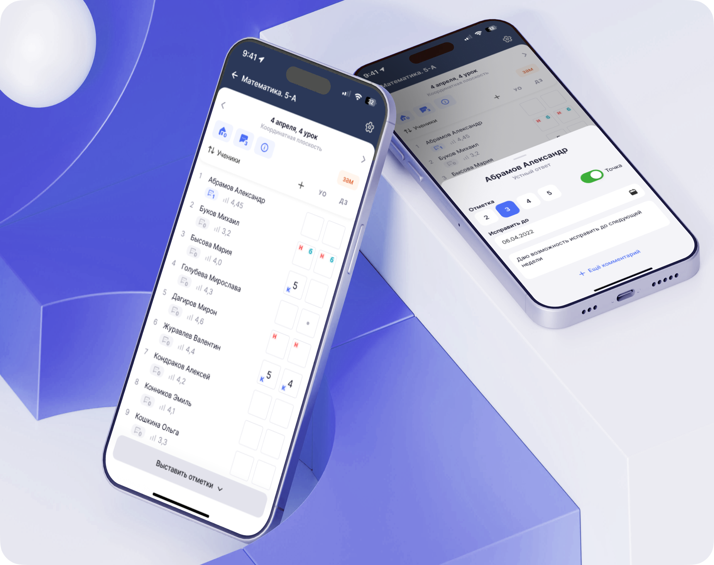
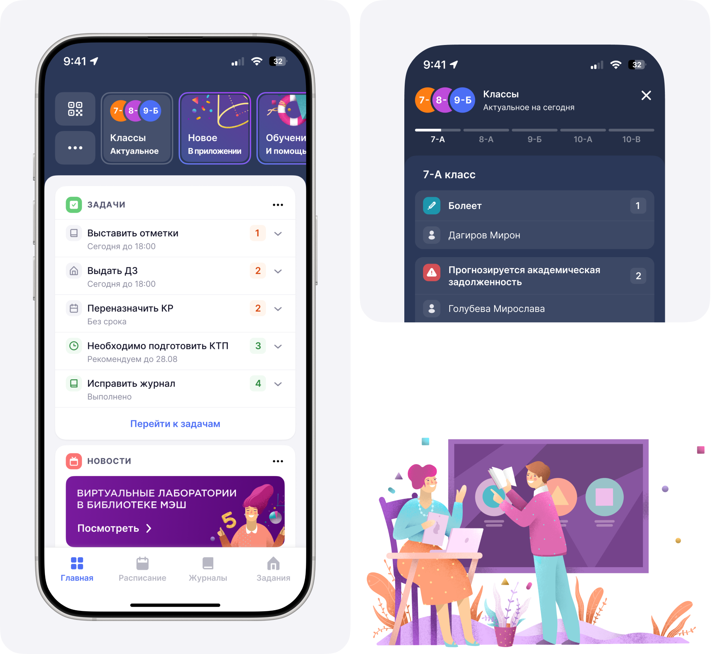
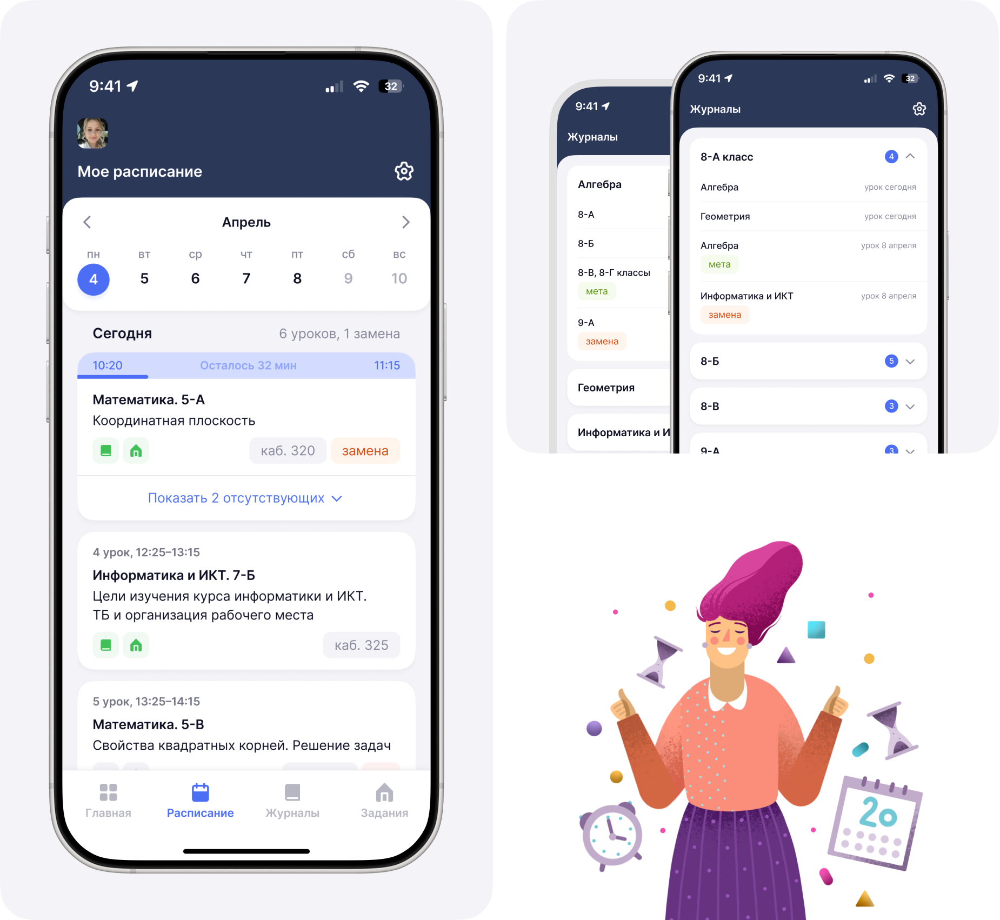
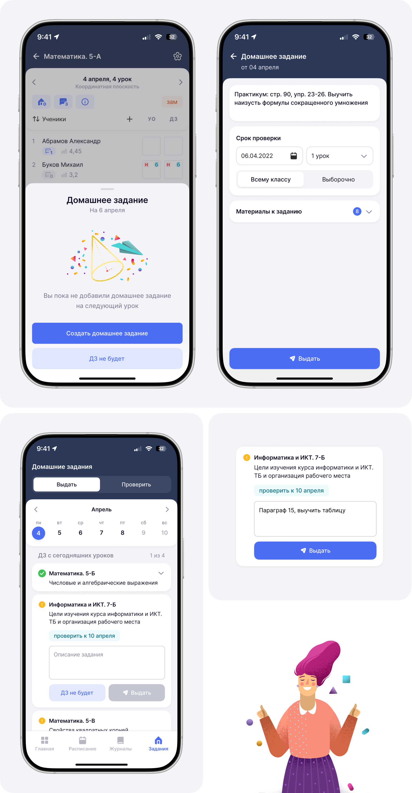
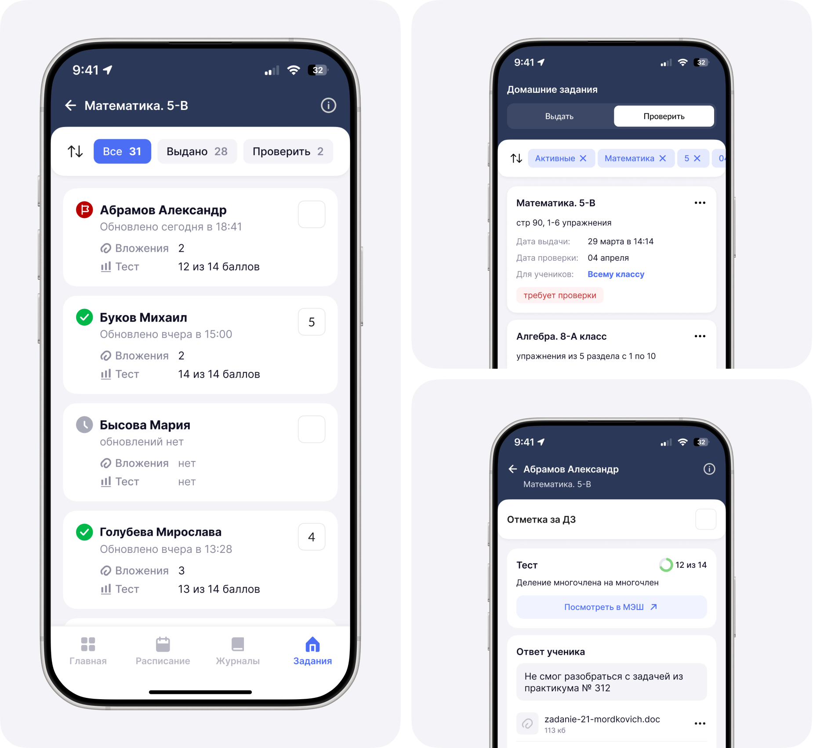

Teacher's journal
iOS
Android
B2B
2023

«MES Journal» is an app that allows teachers to keep schedules and class journals at hand, create and check homework, and grade students.
Moscow Electronic School is a project of the Department of Education aimed at digitalizing education. All documents, including grade journals and homework assignment, were handled via a web service.
DAU
70K+
Moscow schools
718
My role
Worked end-to-end on the project: from discovery and problem definition through design to final release
• Joined during active discussions about the need for the app.
• Documented business expectations – the app should replace the web version of the journal.
• Interviewed users and identified their pain points and needs.
• Conducted several design thinking sessions as a team.
• Gathered requirements and constraints and selected the best ideas.
• Created the information architecture for the future app.
• Conducted several design thinking sessions as a team.
• Conducted 13 UX tests in schools.
• Released to all Moscow schools.
Teacher's Pain Points
After checking homework, they write grades in a notebook to enter them later from a computer
They are afraid of breaking school equipment and leaving the computer unattended
They sometimes forget to assign homework
They cannot step away from the class even for a minute
The main insight
It is difficult to work on school computers. Teachers experience anxiety and lose confidence.
Solution
Teachers need to be able to complete their daily work tasks on their own devices – smartphones – which will help maintain confidentiality and confidence during lessons
Main
The section helps quickly navigate tasks and activities

Scheldule and journals
The schedule section supports planning and quick updates

Lesson
A feature-rich section with multiple capabilities: switching between lessons, creating assignments and lesson comments, as well as recording grades or attendance

Homework
Assigning homework is one of the key functions of the app. The workflow requires assigning homework to students after each lesson or marking that no assignment was given.

Homework checking
The functionality in the mobile app allowed teachers to check students' answers at any convenient time and assign grades

Result
Released to all Moscow schools
A full replacement of the web service
Teachers find it difficult to work on computers and unfamiliar equipment; the app on their personal smartphones helped reduce anxiety and increase confidence during lessons.
8,1 / 10
UX score based on surveys for:
• mobility and accessibility
• user-friendly and intuitive interface
• ability to quickly access the journal
• ease of creating homework assignments
• mobility and accessibility
• user-friendly and intuitive interface
• ability to quickly access the journal
• ease of creating homework assignments
The journal became a tool that restored teachers' sense of safety and confidence.